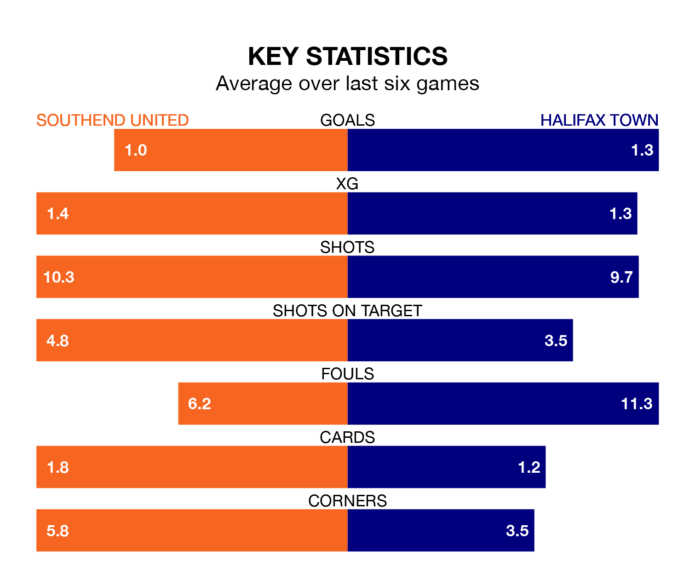

National League's two meanest defences go head-to-head at Roots Hall on Saturday, when Halifax Town visit Southend United.
No teams have conceded fewer goals than Halifax to date: the away side have let in just 24 goals in 26 games.
The Shrimpers have conceded 28 goals in 25 games, giving them the second tightest back line so far this season.
Key to the Shaymen's home form has been Samuel William Johnson, who has allowed 0.73 goals past him per 90 minutes, compared to 1.33 for Collin Andeng Ndi in the opposite net.
Halifax are seventh in the table after 26 games, of which they have won 10 and drawn 10, earning 40 points.
Southend are three places behind Town in 10th, with 11 wins and five draws putting them on 38 points.
In Harry Cardwell, United have one of the league's most on-form strikers so far this season. He has notched 12 goals in 21 appearances, to sit seventh in the scoring charts.
His goal rate of one every 156 minutes is quicker than that of Millenic Alli, the Shaymen's top scorer with a goal every 268 minutes, and a total of seven goals in 21 games.
The Shrimpers are in mixed form in National League, with two wins and a draw from their last six games.
With two wins and three draws over that period, the away side's form is slightly better – they have taken nine points from 18, compared to the hosts' seven.
Over the last year, Southend and Halifax have played each other twice. Southend won one of them and they drew the other.
Their last meeting was on September 9, when they played out a 1-1 draw.
Southend's last match was on December 30, a 1-0 loss against Barnet.
Halifax drew 0-0 with Altrincham last time out, on Monday.
Updated: 12:57, 02/01/24